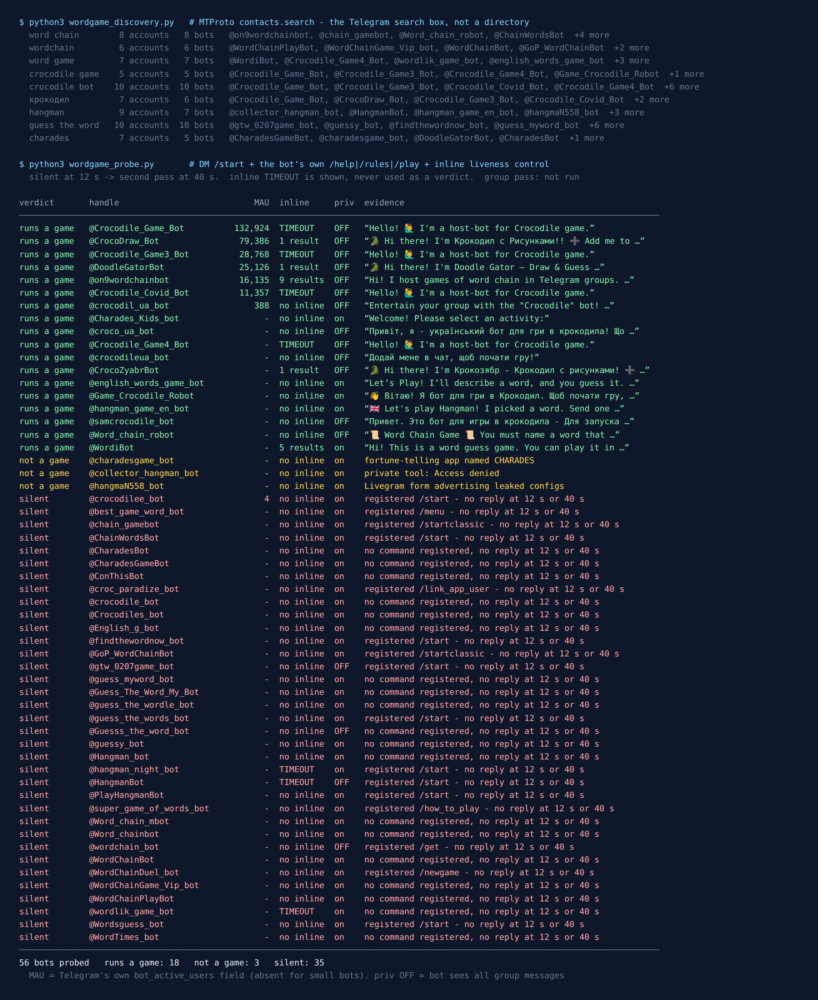

Telegram Word Game Bots: 56 Tested, 18 Actually Play
Word games are the easiest thing to play in a group chat and the hardest to referee. Someone has to pick a secret word, keep score, and notice that “tea” was already used ten minutes ago. That is what a word game bot is for, and Telegram has plenty of them: Crocodile, word chain, hangman, guess-the-word.
On 16 September 2026 I asked Telegram’s own search which of these bots exist, messaged every one it returned, and compared what each bot says about itself with the monthly user count Telegram publishes for it.
56 bots came back. 18 run a word game. 35 never answered. The biggest Crocodile bots turned out to be one game under four names, one Ukrainian bot claims 116,576 active users while Telegram counts 388, and a liveness test I relied on in my last three censuses turned out not to prove what I said it proved.

How the list was built
Directory sites keep a bot listed for years after its server stops, so a directory mostly tells you which bots once existed. I found that out the hard way on general game bots. So the list came from the platform instead. The Telegram search box runs an API method called contacts.search, which returns accounts that exist right now (core.telegram.org).
I fixed nine queries before measuring anything: word chain, wordchain, word game, crocodile game, crocodile bot, the Cyrillic крокодил, hangman, guess the word and charades. Crocodile is on the list twice because it is the name most of Telegram plays charades under: one player explains a secret word without saying it or any word with the same root, and everyone else guesses. It is charades in text. The queries returned 56 distinct bot accounts, and every one got the same four steps:
/startin a private chat, twelve seconds to reply.- The bot’s own help, rules or play command, taken from the command list it registered with Telegram, never guessed.
- An inline query, which Telegram forwards to the bot’s server.
- Anything silent got a second pass at 40 seconds before “silent” counted as a verdict.
What I did not do is play a group round. My test account is not allowed to create groups, and I was not going to add 56 strangers’ bots to somebody else’s chat. So “runs a word game” below means the bot is up and explained a working game to me. Four of them started a game in the private chat, and I say which.
The big Crocodile bots are one product
Every bot account on Telegram can carry a field the API schema describes as “Monthly Active Users (MAU) of this bot (may be absent for small bots)” (core.telegram.org/constructor/user). Telegram fills it in, not the bot owner. Eight of the 56 had it:
| Bot | Monthly users | What it is |
|---|---|---|
@Crocodile_Game_Bot | 132,924 | Crocodile host, Russian-first (@vktrbots) |
@CrocoDraw_Bot | 79,386 | Crocodile with drawings |
@Crocodile_Game3_Bot | 28,768 | same Crocodile host as the first row |
@DoodleGatorBot | 25,126 | same drawing game, English name |
@on9wordchainbot | 16,135 | word chain, open source |
@Crocodile_Covid_Bot | 11,357 | same Crocodile host again |
@crocodil_ua_bot | 388 | Ukrainian Crocodile with AI jokes |
@crocodilee_bot | 4 | never answered |
Read the right-hand column before the numbers. @Crocodile_Game_Bot, @Crocodile_Game3_Bot, @Crocodile_Covid_Bot and @Crocodile_Game4_Bot answered /start with the same sentence, “Hello! I’m a host-bot for Crocodile game”, the same six buttons and the same publisher line in their descriptions (@vktrbots). That is one Crocodile game served from four usernames, together about 173,000 monthly users. The fourth has no MAU at all, and it is the one whose description is in English.
The second family is the drawing version. @CrocoDraw_Bot, @CrocoZyabrBot and @DoodleGatorBot sent the same rules message word for word: you get a word, open a canvas inside Telegram, draw it, and everyone else guesses one word per message. @DoodleGatorBot is the English-named storefront of the same game, with another 25,126 users.
Why several names? My guess, and it is only a guess, is load and reach: a bot that is rate-limited or banned in one big chat does not take its twins down with it. What it means for you is simpler. Picking between the top Crocodile bots is not picking between competitors. Pick the one whose language buttons suit your group.
116,576 active users, says the bot. 388, says Telegram
@crocodil_ua_bot is a Ukrainian Crocodile host that adds AI-written jokes to the game. Its welcome message told me: “There are already over 116 576 active users”. Telegram’s own counter for the same account on the same evening was 388.
Both can be true in a narrow sense. “Active users” in a welcome message can mean everyone who has ever pressed Start since launch, and 388 is the last month. But a three-hundred-fold gap is exactly why the platform number is worth reading. A bot’s owner writes its welcome message. Nobody but Telegram writes bot_active_users.
The Mafia test the night before had pointed the same way: there, every bot with a MAU figure was a working game. Here that rule held for seven of eight, and broke once. @crocodilee_bot carries a MAU of 4 and did not answer /start or its own /play, at twelve seconds or at forty. Four users a month is a number, but it is not a signal. Treat the field as a size, not as a health check.
Want a round without adding a bot?
The free Party Game runs inside Telegram itself, so there is nothing to add to your group and nothing reading the chat: Would You Rather, Never Have I Ever, Truth or Dare and quiz rounds, from two players up.
Open the Party Game No Telegram? It runs in a browser too: charliemorrison.dev/party-gameThe ones I would try first
@on9wordchainbot for word chain in English. 16,135 monthly users, and the only one here that links its own source code: jonowo/on9wordchainbot on GitHub, GPL-3.0. It opened with “Hi! I host games of word chain in Telegram groups”, and its inline mode returned nine results; the first three start a classic, a hard mode and a chaos game. Word chain is the old game where each word has to start with the letter the previous one ended on (Wikipedia). Its /help points to /gameinfo for the mode rules and to a channel where players request new dictionary words.
@Crocodile_Game4_Bot for Crocodile in English. Same engine as the 132,924-user original, and it was the one twin that answered /help with the rules in English: a host explains the word, “it is not allowed to use cognates”, whoever sends /start in the group becomes the host. Its buttons also link to Crocodile chats in English, Russian and Ukrainian, two of them voice chats, if your own group is short of players.
@DoodleGatorBot if your group would rather draw. The English name of the drawing family, with 25,126 users of its own. All three twins put a “Crocodile Store” button in the welcome, and @CrocoDraw_Bot also offered me a “Crocodile Egg” that hatches into a pet in five days, which tells you where the business model is. /eggs_off turns the eggs off.
@WordiBot for two people. The only one that is built for a private chat as well as a group: “You can play it in private chat with your friends, in telegram groups, and even with a random opponent.” Its inline mode returned five results starting Beginner, Easy, Normal, so you can start a game from inside any chat by typing its name. If you are two, not ten, the two-player test has more options.
For Ukrainian-speaking groups, @croco_ua_bot answered with a proper Ukrainian menu: classic Crocodile, a maths mode, a flags mode, and a mock wedding with a certificate, all commands group-only. @crocodileua_bot and @Game_Crocodile_Robot also answered in Ukrainian. The second one comes with a catch: its only instruction is to add it to a group, and its account carries the Telegram flag for bots that are not allowed into groups (bot_nochats). I could not try the add, but I would not start with it.
Four that start a game in private
Most word games need a group. These answered with a game, or a game menu, in the private chat:
@hangman_game_en_botstarted hangman immediately: a drawn gallows, seven blanks, “Mistakes: 0/13”. No menu, no sign-up.@english_words_game_botdescribes a word and you guess it, with the word itself blanked as[w...]in the definition. Handy for vocabulary practice; the description I got was long and a little odd, so it is not built for speed.@WordiBot, above, can pair you with a random opponent if nobody else is around.@Charades_Kids_botopened a menu of Charades, Trivia, Capital Cities, Jeopardy and, a little oddly for a bot with “Kids” in its name, Never Have I Ever.
A word game name is not a word game
@hangmaN558_botis not hangman. Its reply, from a bot built on the Livegram contact-form service, advertised a channel of supposedly leaked “configs”, with the same invite link pasted three times. A hangman name is cheap camouflage.@charadesgame_bottook forty seconds to answer and is not charades at all. It is a Russian-language fortune-telling Mini App called CHARADES: ask a question, draw a card, five free readings a day.@collector_hangman_botanswered “Access denied. Ask the bot administrator to add your Telegram user ID.” A private tool with a public name.- 35 sent nothing, at twelve seconds and again at forty. They include most of the obvious handles:
@WordChainBot,@HangmanBot,@CharadesBot,@crocodile_bot,@guessy_bot. A dead bot keeps its name, its picture and its command menu, so from the chat window nothing tells it apart from a slow one.
A correction to my own method
In the Mafia test I called two silent bots “provably switched off” because an inline query to them timed out. The reasoning was that Telegram forwards the query to the bot’s server, so no answer means no server.
Tonight broke that. All four @vktrbots Crocodile twins answered /start and /help within twelve seconds, and all four timed out on the inline query anyway. Their servers are plainly up. A bot can leave inline mode enabled in BotFather and simply never handle inline queries, and from the outside that looks exactly like a server that is down. So an inline timeout proves nothing on its own. It only adds weight when the bot is also silent in private, and even then “switched off” is a strong guess, not proof. I have corrected the wording in the Mafia article.
Why a word game bot reads everything in your group
This matters more here than for most bots. In Crocodile and word chain the guesses are ordinary messages. Nobody types /guess tea; they just type “tea”. A bot in Telegram’s default privacy mode never sees those. Telegram’s documentation lists what a privacy-mode bot receives in a group: commands meant for it, replies to its messages, and a few service messages (core.telegram.org/bots/features). An ordinary guess is none of them.
So most group word game bots switch privacy mode off. The On9 README says it outright: “It is highly recommended that you turn off privacy mode”, because otherwise “the bot will only receive players’ answers when they reply to the bot.” Telegram publishes that setting as a flag (“Can the bot see all messages in groups?”), and 13 of the 18 working hosts in this test have it switched on, including every Crocodile bot in both families.
That is not sinister. It is how the game works. It is still a reason to play in a group made for games, not in the family chat or the work chat, where a stranger’s server would read every message for as long as the bot stays in.
How I would pick one tonight
- Decide the game first. Crocodile needs one player to explain each word; word chain needs nobody in that role; hangman and guess-the-word work alone.
- Prefer a bot with a monthly user count, and read it as size, not health.
- Believe Telegram’s number over the bot’s own. 388 is not 116,576.
- Send
/startin private and wait fifteen seconds. If nothing comes, give it forty: one bot here answered only that late (and turned out not to be a game). - Add it to a group made for games. Most word game hosts read every message in the chat, because that is where the guesses are.
If you are planning the whole evening, the game night guide covers what breaks first in a busy chat, and the party games list has games that need no bot at all.
For a group that would rather not add a bot
The Telegram Party Pack is 255 group-chat prompts — 45 Never Have I Ever statements, 30 Would You Rather dilemmas, 110 Truth or Dare — as copy-paste text and ready-made poll blocks. It has no word games in it. It is for the nights when you want the chat to play without a stranger’s server reading along.
Get the pack — $9.99 Or see which Mafia bots are worth the admin rights.What I could not test
No round was played to the end. A bot can explain its rules perfectly and still stall on the fifth word. The four private-chat games above were opened, not played through.
Silent is not dead. Some of these bots may ignore private chats on purpose and work fine in groups. I cannot tell those apart from switched-off ones from the outside, and after tonight I no longer pretend the inline test can.
The family links are inferred. Identical replies, buttons and publisher lines are strong evidence that bots share an owner. They are not a statement from the owner.
Word lists, dictionaries and even whole bots change quickly, so the date at the top matters. Fifteen seconds of /start beats any list, this one included.